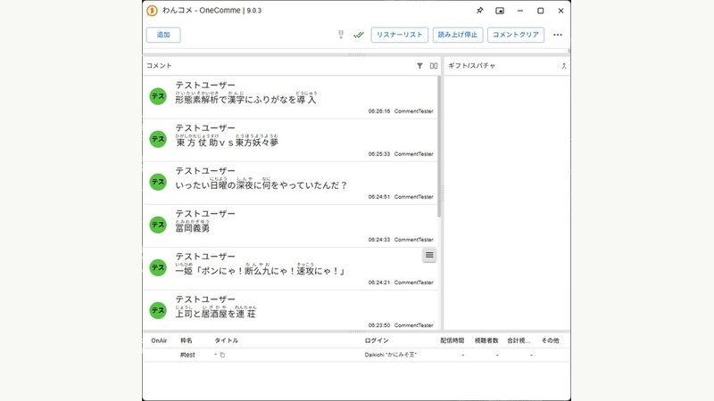
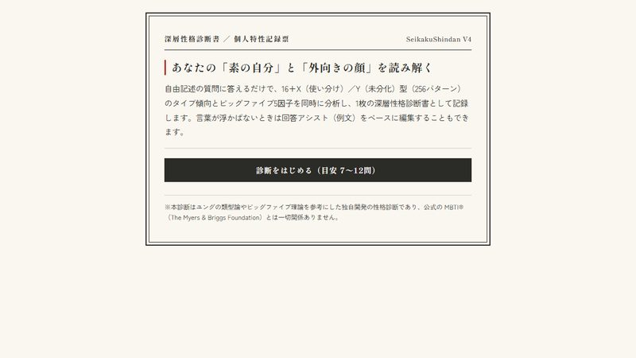
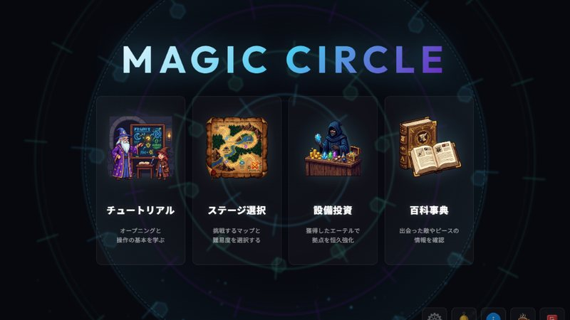
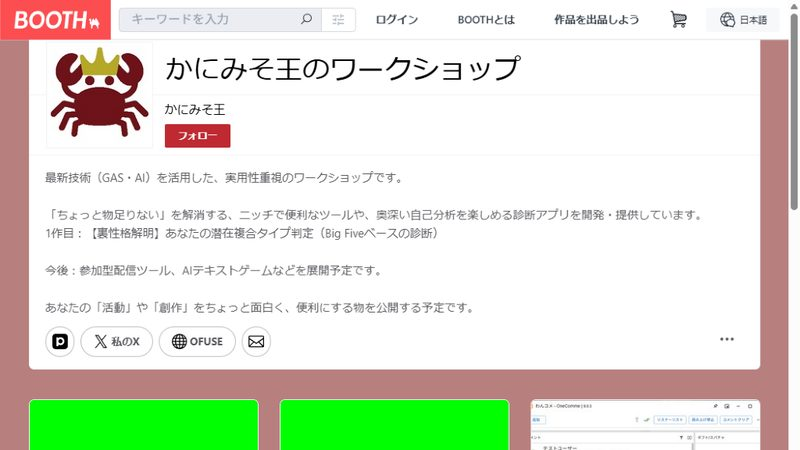
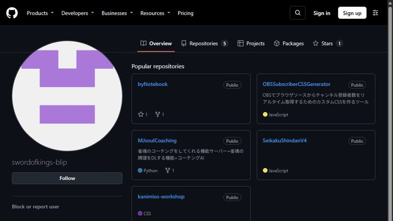
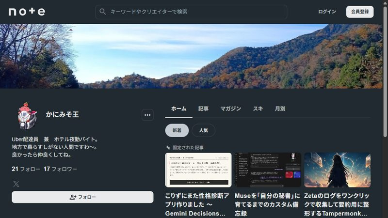
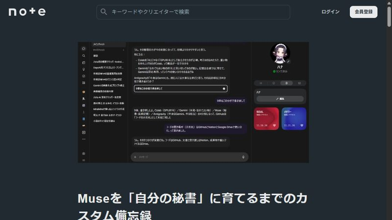

「こんなツールがあったら楽なのに」を形にします
AI活用の小さなWebアプリ・ツール制作｜診断アプリ・業務自動化・配信者向け
受付・ハナ
いらっしゃいませ。ご相談はメールでどうぞ。秘書のハナも一緒に確認します。
普段から自分用に便利ツールや配信用の小物を作っている個人制作者です（元エンジニア・元ホテルマン・現役Uber配達員）。「ちょっと面倒」を解消する小物が専門で、大規模システムはお受けしていません。
できること
- 診断・占い系Webアプリ
- 自由記述の回答をAIが判定する診断アプリなど、入力内容に合わせた結果を返すWebアプリを制作します。
- 業務自動化
- スプレッドシート連携、フォームから集計・通知までの自動化、GAS（Google Apps Script）化に対応します。
- 配信者向けツール
- OBSブラウザソース用のウィジェットや、コメント・字幕まわりの小物を制作します。
- AI組み込み
- 文章生成・分類・判定などの処理を、既存の仕組みに組み込む試作を行います。
- AIアシスタントのカスタム・導入支援
-
- AI秘書（Muse、Gemini）の初期設定、口調・性格の調整、メモリーの設計
- 定期作業の仕組み作り（チェックやリマインドの自動化）
- 複数AI（Gemini／Colab等）との役割分担の設計
※ 進め方は「手順書と設定一式の納品」が基本です（ご自身の環境への適用・操作は依頼者側で進めていただく形になります）。
設計のこだわり
- 維持費を抑える構成
- GAS・GitHub Pages・無料枠などを活かし、ランニングコストがかさみにくい仕組みを提案します。
- 引き継ぎやすい納品
- ブラックボックスにせず、ソースコード一式と設定手順書をセットでお渡しします。
- 安全な自動化設計
- AIに任せる範囲と人が確認する範囲を明確に分けて設計します。
実績（作品目録）
-
わんコメ漢字ふりがなくん人気作・無料
BOOTHで一番「スキ！」を集めた作品（49件）。形態素解析と6万2千語のカスタム辞書で、配信コメントの漢字にルビを自動追加するわんコメ専用プラグインです（無料配布中）。
仕様形態素解析 / 62,000語カスタム辞書 / わんコメPlugin / JavaScript

口絵 01：わんコメ上の漢字ルビ自動追加画面（BOOTH商品画像） -
SeikakuShindan V4Webアプリ
自由記述×AI判定の性格診断アプリ
仕様Google Apps Script / Gemini API（自由記述の構造化判定）/ 静的フロント

口絵 02：深層性格診断書（カルテ風トップ画面） -
Magic CircleWebゲーム
ステージ選択・拠点強化・百科事典などを備えた、力を入れて制作したブラウザ戦略ゲームです。
仕様ブラウザ完結ゲーム設計 / 状態管理・永続化 / Vercel

口絵 03：Magic Circle タイトル・メニュー画面 -
BOOTHショップ「かにみそ王のワークショップ」BOOTH
配信者向けツールなどを公開中
仕様OBSブラウザソース / わんコメ連携 / HTML・CSS・JavaScript

口絵 04：BOOTHショップ公開ラインナップ -
GitHub（swordofkings-blip）GitHub
その他の公開作・ソースコード
仕様JavaScript / Python / Google Apps Script / 自動化ツール各種

口絵 05：GitHubリポジトリ一覧 -
note（kanimiso_king）note
制作の記録や開発メモ

口絵 06：noteクリエイターページ -
音声読み上げサーバーの構築、常駐ノートPCによるPC起動リレー、チャット履歴の自動アーカイブ基盤、日記運用など
仕様音声読み上げサーバー構築 / 常駐PC起動リレー / ログ自動アーカイブ

口絵 07：Museカスタム備忘録（note記事）
-
その他の作例
- 待機番長（配信の順番待ち管理）
- 出品代行の精算計算ツール
- OBS用字幕CSSジェネレーター
- MJsoulCoaching（雀魂コーチングAI）
- Zeta要約クリッパー
料金の目安
- お試し ¥3,000
-
小物ツール1点、既存スクリプトの小改修
AI活用の相談（1件） - 標準 ¥15,000〜
- 小規模Webアプリ／自動化ツール1本（設計込み・納品完結）
- カスタム 要相談
- 複数機能の組み合わせ、AI判定の本格組み込み、AIアシスタントのカスタム・導入支援など
※ 金額はあくまで目安です。内容を伺ってから、正式なお見積もりをお出しします。
進め方
-
下記の問い合わせ導線から、作りたい物のイメージをお聞かせください。
-
できる／できない、概算の金額と期間を正直にお答えします。
-
内容が固まってから正式にご依頼いただき、制作のうえ納品します（ソース一式をお渡しします）。
大事な線引き
- 納品完結型です。納品後の軽微な文言・見た目修正は7日以内なら対応します
- 継続保守・常駐対応・運用代行は含みません（必要な場合は別途相談）
- 大規模開発、スマホアプリのストア公開代行、サーバーの常時監視が必要なものは対応外です
- AI（Gemini等）を使う場合、APIキーの取得・設定とAPI利用料は依頼者側の負担です
- 個人開発のため、対応は週に数件まで。返信は夜〜深夜が多めです
よくある質問
- Q.アイデアだけでも相談できますか？
- A.できます。「これ、作れる？」だけでも大丈夫です。できない場合はできないとはっきり言います。
- Q.納品後に直したくなったら？
- A.軽微な修正は納品後7日以内に対応します。それ以降や機能追加は再度の依頼になります。
- Q.保守や運用もお願いできますか？
- A.原則として行っていません。納品物はソース一式お渡しするので、引き継ぎしやすい形にします。
- Q.急ぎの案件は？
- A.個人対応のため特急は基本受けていません。納期は相談時に正直にお伝えします。
作り手について
元エンジニア＆元ホテルマン＆現役Uber配達員。個人でAIを使った小さなアプリ・ツールを作っています（設計〜公開まで一人で対応）。
活動時間：夜型。返信は夜〜深夜が中心です。
略歴
- 鹿屋工業高校 電子科（メカトロ部）
- 鹿児島高専 電子科 卒業（メカトロニクス研究部）
- 久留米高専 機械電気システム情報専攻科 修了
- 職歴：エンジニア（圧縮機計装設計など）→ ホテル夜勤 → 現在はUber配達員と並行して個人制作
使える言語・ツール
- 言語
- TypeScript／JavaScript、Python、HTML／CSS、Google Apps Script
- 環境・連携
- Google Apps Script、Googleスプレッドシート連携、Gemini API（判定・生成）、GitHub／GitHub Pages
- その他
- ローカルLLM（LM Studio等）の活用、AIを使った開発（設計・指示・検証を担当）、Arduino（マイコン制御）
受付・ハナ 「うちのご主人は、設定を練ってる時が一番楽しそうです。」
相談の例
- 「配信で使うタイマーを作ってほしい」
- 「スプレッドシートの集計作業を自動化したい」
- 「AIが判定する診断アプリを作りたい」
- 「自分のAI秘書のカスタムを手伝ってほしい」
「これ、作れる？」だけの相談も歓迎です。
受付・ハナ 「ざっくりしたイメージだけでも大丈夫ですよ。」
問い合わせ
お問い合わせはメールで受け付けています（ボタンを押すと件名と相談ひな形が入った状態でメールが開きます）。X・BOOTH・noteも補助窓口としてご利用いただけます。